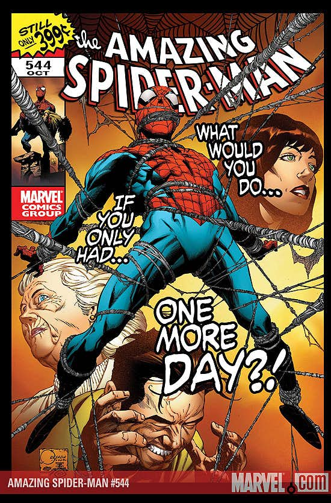

“One More Day” was done by J. Michael Straczynski and Joe Quesada to conclude Straczynski’s run on Amazing Spider-Man, which he had been on for just over six years. It also acted as the final issues of Sensational Spider-Man and Friendly Neighborhood Spider-Man, setting the stage for Amazing Spider-Man to go weekly for three weeks of the month. The story was built up to with a teaser image, leading everyone to wonder what the one more day was going to be: Aunt May dying, Mary Jane dying, something else? Things became clearer during the “Back in Black” story in the Spider-books where May was shot and critically injured by an assassin sent by the Kingpin to kill the fugitive Peter Parker, on the run after publically exposing his identity and then turning on Tony Stark in Civil War.
(For those who are curious, Steven Grant penned a fantastic What If…? issue that came out in December where Mary Jane is the one who gets shot instead of May, and really uses the one-off nature of the story to do interesting things with the character that would have changed things for good. I discussed it then in more detail in my CBR review. Mentioning it mostly because it was a good comic that got ignored. It was also a candidate for a Reread Review… I’m betting many would have preferred it, actually.)
Initially, the book was meant to ship weekly during August 2007, but that was quickly abandoned thanks to Quesada, firstly, being the editor-in-chief at Marvel; and, secondly, never being the quickest artist in the world additionally. What was meant to be a one-month event turned into a dragged out, five-month internet hate-fest. I won’t get into all of it now, but let’s just say that this story was universally loathed, even by those who agreed with what Marvel was ultimately doing: getting rid of the marriage of Peter and Mary Jane. Plus, there was the controversy where Straczynski apparently asked to have his name removed from the final issue only to have Quesada compromise by sharing the writing credit — a move that didn’t quite work since Straczynski told people that he requested to have his name taken off of it. Ah well. [EDIT: Sorry, it was the final two issues of this story, not just the last one, that Straczynski requested to have his name taken off of.]
I want to take this issue by issue, prefaced each time with my thoughts on each issue when they were first released and, then, conclude with general thoughts. Let’s do this.